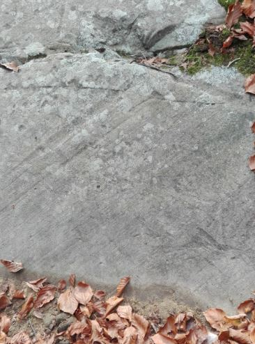
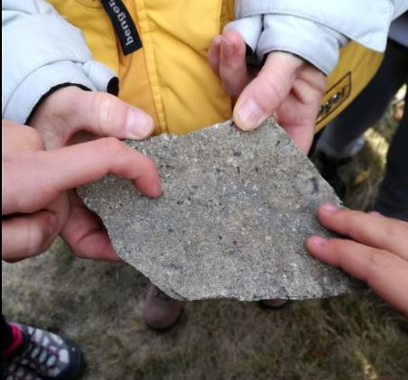

Roccia montonata
Le rocce montonate sono tipiche formazioni rocciose formate dall’azione erosiva di ghiacciai. Se camminando su un sentiero di montagna vi accorgete della presenza di una roccia con struttura asimmetrica, stondata, con striature parallele che seguono una sola direzione, non vi è dubbio: lì vicino, un tempo più o meno lontano c’era un ghiacciaio che ha eroso la valle in cui scorreva dando luogo a forme del paesaggio inconfondibili. Le striature mostrano chiaramente la direzione di scorrimento del ghiaccio che si muoveva verso valle scorrendo su un sottile strato di acqua che si forma sul fondo visto che la forte pressione provoca una fusione parziale dello strato più basso. I pezzi di roccia via via strappati dall’azione del ghiacciaio scorrono con esso e provocano le striature che possiamo osservare anche migliaia e migliaia di anni dopo, come nel nostro caso.

Il Macigno
L’arenaria è una roccia sedimentaria composta da granuli dalle dimensioni medie di una sabbia. Le arenarie possono avere composizioni mineralogiche diverse. I granuli sono tenuti insieme tra loro da un cemento che può essere di varia natura. È una roccia clastica, ossia si forma per cementazione di sabbie in periodi diversi, compresse e scaldate. Le arenarie sono le rocce più comuni dei depositi marini profondi legati ad alcune correnti capaci di trasportare per un lungo tratto grandi e numerosi sedimenti di origine terrestre. Essendo facilmente lavorabile e con un bellissimo aspetto l’arenaria può essere usata per costruire le case. L’Appennino presenta potenti formazioni di arenaria, fra cui il Macigno.